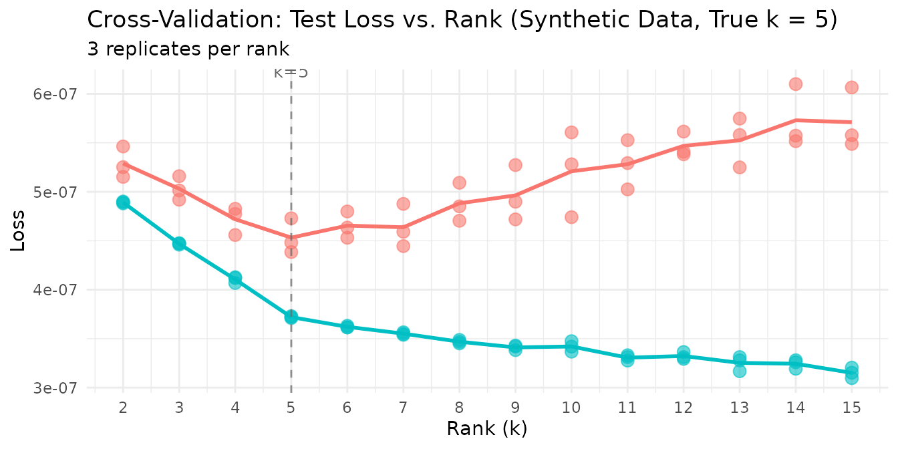
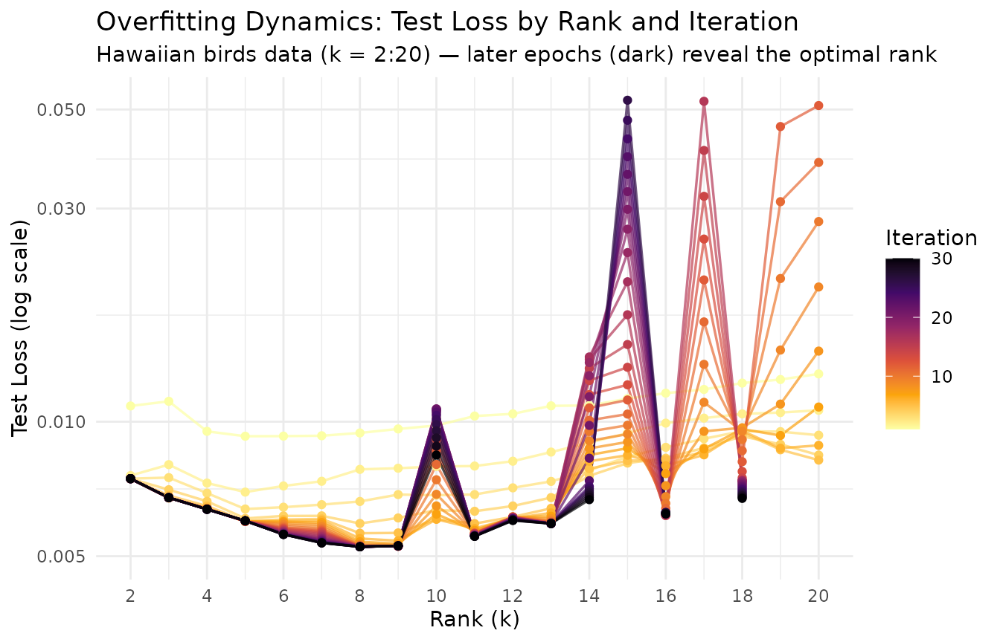
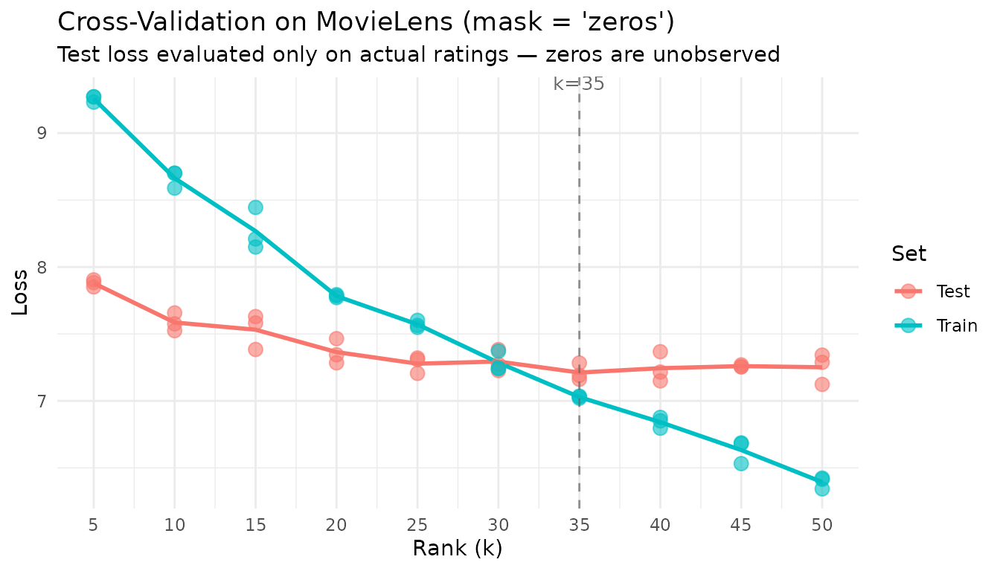
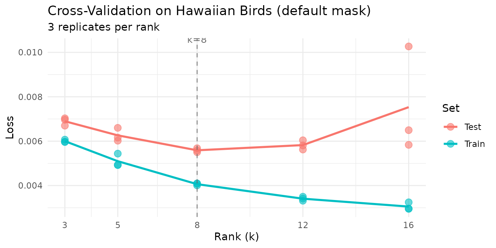
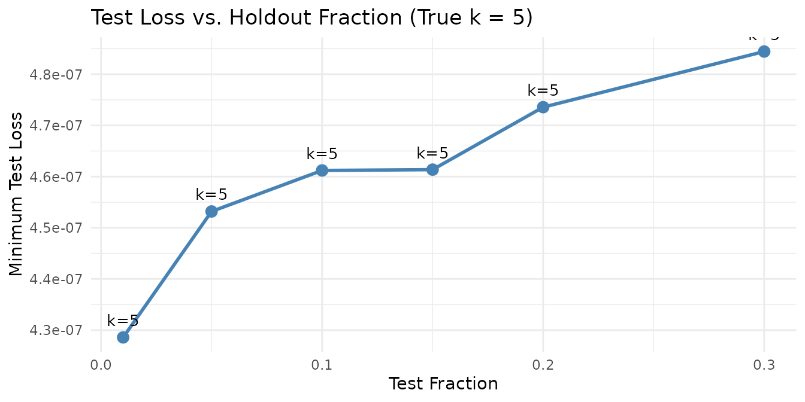

Motivation
How many factors does your data really have? Training loss always decreases as increases — adding more factors can only improve the fit on the training data, even when the extra factors are fitting noise. This makes train loss useless for selecting the optimal rank.
RcppML solves this with speckled holdout cross-validation: randomly mask a fraction of individual matrix entries, fit the NMF model on the remaining entries, and evaluate reconstruction error on the held-out entries. Unlike row or column holdout, speckled masking preserves the full structure of every sample and every feature. The optimal rank is where the test loss curve forms an “elbow” — decreasing sharply up to the true rank and flattening or increasing thereafter.
Cross-validation is also one of the most computationally intensive operations in NMF, since it requires fitting multiple ranks across multiple replicates. GPU acceleration can provide substantial speedups (10–50×) for large-scale CV sweeps — see the GPU Acceleration vignette.
API Reference
Cross-Validation via nmf()
Cross-validation is triggered by passing a vector to
k:
nmf(data, k = c(2, 4, 6, 8, 10),
test_fraction = 0.1, cv_seed = 1:3,
mask = NULL, patience = 5, ...)| Parameter | Default | Description |
|---|---|---|
k |
— | Vector of ranks to evaluate |
test_fraction |
0 | Fraction of entries held out (set > 0 for CV) |
cv_seed |
NULL | Seed(s) for holdout mask. Vector length = number of replicates. |
mask |
NULL | Missing data mask: NULL, "zeros",
"NA", a matrix, or
list("zeros", <matrix>)
|
patience |
5 | Early stopping: stop if test loss hasn’t improved in this many iterations |
seed |
NULL | Seed for NMF initialization (separate from CV mask) |
Return value: A data.frame of class
nmfCrossValidate with columns:
| Column | Description |
|---|---|
k |
Rank tested |
rep |
Replicate index (factor) |
train_mse |
Training set loss (named train_mse regardless of the
loss function used) |
test_mse |
Held-out test set loss (named test_mse regardless of
the loss function used) |
best_iter |
Iteration with best test loss |
Use plot(cv_result) for a built-in test-loss-vs-rank
curve.
mask Semantics
The mask parameter controls both fitting and
cross-validation simultaneously — there is no separate CV-specific mask
setting. It accepts five forms:
-
mask = NULL(default): All entries (including zeros) can be held out. Tests full-matrix reconstruction. Appropriate for dense data or applications where zero is a real measurement. -
mask = "zeros": Only nonzero entries can be held out. Zeros are treated as “unobserved,” not “zero-valued.” Essential for recommendation data (unrated items) and any domain where zero means “not measured.” -
mask = "NA": NA entries in the data are treated as missing. If the data contains NAs and no mask is specified, this is set automatically with a warning. -
mask = <matrix>: A custom dgCMatrix or matrix of the same dimensions asdata. Nonzero entries in the mask mark observed positions; zero entries mark unobserved positions. -
mask = list("zeros", <matrix>): Combines zero-masking with a custom mask — zeros are treated as unobserved and the custom mask is applied simultaneously.
Caution: Do not compare test loss values across
maskmodes on the same axis. Withmask = "zeros", the test set only includes non-zero entries (e.g., actual ratings), producing loss values on their natural scale. Withmask = NULL, the test set is dominated by zero entries, yielding much smaller absolute loss values. The two scales are fundamentally different and direct comparison is misleading.
Theory
Speckled Holdout
For each entry
,
include it in the test set with probability test_fraction.
All other entries form the training set. This preserves matrix structure
— every row and column retains most of its entries for training.
Choosing
Plot test loss against rank and look for the elbow: the point where test loss transitions from steep decrease (capturing real structure) to a plateau or increase (overfitting noise). Below the elbow, the model is underfitting. Above, it’s fitting noise.
Overfitting Dynamics
At the optimal rank, the model captures all real structure without fitting noise. Overfitting manifests as the test loss increasing while training loss continues to decrease. Higher ranks are more prone to overfitting because the model has more capacity to memorize noise in the training data.
Worked Examples
Example 1: Recovering True Rank from Synthetic Data
We generate a matrix with exactly 5 true factors and noise, then ask cross-validation to find the optimal rank.
sim <- simulateNMF(200, 80, k = 5, noise = 3.0, seed = 42)
cv <- nmf(sim$A, k = 2:15, test_fraction = 0.05, cv_seed = 1:3,
tol = 1e-5, maxit = 200)
agg <- aggregate(test_mse ~ k, data = cv, FUN = mean)
agg$se <- aggregate(test_mse ~ k, data = cv, FUN = function(x) sd(x) / sqrt(length(x)))$test_mse
optimal_k <- agg$k[which.min(agg$test_mse)]
knitr::kable(
data.frame(
k = agg$k,
`Mean Test Loss` = format(agg$test_mse, digits = 3, scientific = TRUE),
`SE` = format(agg$se, digits = 3, scientific = TRUE),
check.names = FALSE
),
caption = paste0("Mean test loss per rank (3 replicates). Optimal k = ", optimal_k, ".")
)| k | Mean Test Loss | SE |
|---|---|---|
| 2 | 5.29e-07 | 9.17e-09 |
| 3 | 5.03e-07 | 6.99e-09 |
| 4 | 4.72e-07 | 8.19e-09 |
| 5 | 4.53e-07 | 1.03e-08 |
| 6 | 4.65e-07 | 7.82e-09 |
| 7 | 4.64e-07 | 1.27e-08 |
| 8 | 4.88e-07 | 1.13e-08 |
| 9 | 4.96e-07 | 1.63e-08 |
| 10 | 5.21e-07 | 2.52e-08 |
| 11 | 5.28e-07 | 1.45e-08 |
| 12 | 5.47e-07 | 7.33e-09 |
| 13 | 5.53e-07 | 1.46e-08 |
| 14 | 5.73e-07 | 1.86e-08 |
| 15 | 5.71e-07 | 1.79e-08 |
Cross-validation identifies the optimal rank — test loss drops sharply from k=2 to k=5 (the true rank), then increases beyond k=5 as the model begins fitting noise rather than structure.
plot(cv) +
labs(title = "Cross-Validation: Test Loss vs. Rank (Synthetic Data, True k = 5)") +
theme_minimal() +
theme(legend.position = "none")
The clear elbow at k=5 confirms that speckled holdout CV recovers the planted rank. The individual replicate points cluster tightly, showing that 3 replicates suffice for stable estimates at this matrix size.
Example 2: Overfitting Dynamics (Epoch Plot)
Cross-validation works because overfitting worsens at higher ranks:
more factors mean more capacity to memorize the training data. We can
visualize this by tracking test loss at every iteration across multiple
ranks, using the on_iteration callback to capture per-epoch
dynamics.
data(hawaiibirds)
ranks_to_show <- 2:20
# Capture per-iteration test loss at each rank
track_test <- function() {
losses <- numeric(0)
list(
callback = function(iter, train_loss, test_loss) { losses[iter] <<- test_loss },
get = function() losses
)
}
iter_logs <- do.call(rbind, lapply(ranks_to_show, function(k_val) {
tracker <- track_test()
nmf(hawaiibirds, k = k_val, test_fraction = 0.1, cv_seed = 1, seed = 42,
tol = 0, maxit = 30, patience = 30, on_iteration = tracker$callback)
losses <- tracker$get()
data.frame(k = k_val, iter = seq_along(losses), test_loss = losses)
}))The epoch plot displays rank on the x-axis and test loss on the y-axis, with lines colored by iteration. Early iterations (bright) show high test loss at all ranks; as training progresses (dark), the optimal rank emerges as the one with the steepest improvement.
# Bound y-axis: from min test loss to 10x that
min_loss <- min(iter_logs$test_loss)
y_lo <- min_loss * 0.95
y_hi <- min_loss * 10
ggplot(iter_logs, aes(x = k, y = test_loss, color = iter, group = iter)) +
geom_line(alpha = 0.7, linewidth = 0.6) +
geom_point(size = 1.5) +
scale_color_viridis_c(option = "B", direction = -1) +
scale_y_continuous(trans = "log10", limits = c(y_lo, y_hi)) +
scale_x_continuous(breaks = seq(2, 20, by = 2)) +
labs(
title = "Overfitting Dynamics: Test Loss by Rank and Iteration",
subtitle = "Hawaiian birds data (k = 2:20) — later epochs (dark) reveal the optimal rank",
x = "Rank (k)", y = "Test Loss (log scale)", color = "Iteration"
) +
theme_minimal()
Each line traces a single training epoch across ranks. At the optimal rank, test loss drops furthest as training progresses. At excessively high ranks, diminishing improvement (or rising test loss in later epochs) signals overfitting — the extra capacity is fitting noise rather than structure. The y-axis is clipped to 10× the minimum test loss to focus on the informative range.
Example 3: Recommendation Data with mask = "zeros"
The movielens dataset (3,867 movies × 610 users)
contains star ratings from 1–5. Most entries are zero — meaning the user
has not rated that movie, not that they gave it zero stars. The
mask = "zeros" setting is essential here: it restricts the
holdout set to actual ratings and treats zeros as unobserved.
data(movielens)
cat("MovieLens dimensions:", nrow(movielens), "×", ncol(movielens), "\n")
#> MovieLens dimensions: 3867 × 610
cat("Sparsity:", round(1 - Matrix::nnzero(movielens) / prod(dim(movielens)), 4) * 100, "%\n")
#> Sparsity: 96.81 %
ranks <- seq(5, 50, by = 5)
cv_movielens <- nmf(movielens, k = ranks, test_fraction = 0.1,
mask = "zeros", cv_seed = 1:3, tol = 1e-3, maxit = 100)
agg_ml <- aggregate(test_mse ~ k, data = cv_movielens, FUN = mean)
plot(cv_movielens) +
labs(
title = "Cross-Validation on MovieLens (mask = 'zeros')",
subtitle = "Test loss evaluated only on actual ratings — zeros are unobserved"
) +
theme_minimal()
agg_ml$se <- aggregate(test_mse ~ k, data = cv_movielens, FUN = function(x) sd(x) / sqrt(length(x)))$test_mse
opt_ml <- agg_ml$k[which.min(agg_ml$test_mse)]
knitr::kable(
data.frame(
k = agg_ml$k,
`Mean Test Loss` = round(agg_ml$test_mse, 4),
`SE` = round(agg_ml$se, 4),
check.names = FALSE
),
caption = paste0("MovieLens CV results (mask = 'zeros'). Optimal k = ", opt_ml, ".")
)| k | Mean Test Loss | SE |
|---|---|---|
| 5 | 7.8795 | 0.0153 |
| 10 | 7.5856 | 0.0386 |
| 15 | 7.5319 | 0.0752 |
| 20 | 7.3647 | 0.0531 |
| 25 | 7.2782 | 0.0364 |
| 30 | 7.2941 | 0.0467 |
| 35 | 7.2119 | 0.0367 |
| 40 | 7.2442 | 0.0646 |
| 45 | 7.2597 | 0.0048 |
| 50 | 7.2512 | 0.0658 |
With mask = "zeros", cross-validation evaluates only the
prediction of actual ratings — exactly the task a recommendation system
performs.
Example 4: Ecological Survey Data
The hawaiibirds dataset records 183 bird species across
1,183 grid cells. In ecological surveys, zeros typically mean “species
not detected” rather than “measured abundance is zero.” We use the
default mask = NULL here because we want to evaluate the
model’s ability to reconstruct the full abundance matrix, including
correctly predicting that many species are absent from many sites.
data(hawaiibirds)
ranks <- c(3, 5, 8, 12, 16)
cv_birds <- nmf(hawaiibirds, k = ranks, test_fraction = 0.1,
cv_seed = 1:3, tol = 1e-3, maxit = 50)
plot(cv_birds) +
labs(title = "Cross-Validation on Hawaiian Birds (default mask)") +
theme_minimal()
Example 5: Effect of test_fraction
We compare different holdout fractions to show how they affect rank selection stability. The true planted rank is 5.
fractions <- c(0.01, 0.05, 0.1, 0.15, 0.2, 0.3)
fraction_results <- do.call(rbind, lapply(fractions, function(frac) {
cv_res <- nmf(sim$A, k = 2:15, test_fraction = frac, cv_seed = 1:3,
tol = 1e-4, maxit = 100)
agg <- aggregate(test_mse ~ k, data = cv_res, FUN = mean)
se_vals <- aggregate(test_mse ~ k, data = cv_res, FUN = function(x) sd(x) / sqrt(length(x)))$test_mse
data.frame(
test_fraction = frac,
optimal_k = agg$k[which.min(agg$test_mse)],
min_test_loss = min(agg$test_mse),
mean_se = mean(se_vals)
)
}))
knitr::kable(
data.frame(
`Test Fraction` = fraction_results$test_fraction,
`Selected k` = fraction_results$optimal_k,
`Min Test Loss` = format(fraction_results$min_test_loss, digits = 3, scientific = TRUE),
`Mean SE` = format(fraction_results$mean_se, digits = 3, scientific = TRUE),
check.names = FALSE
),
caption = "Effect of test_fraction on rank selection (synthetic data, true k = 5).",
row.names = FALSE
)| Test Fraction | Selected k | Min Test Loss | Mean SE |
|---|---|---|---|
| 0.01 | 5 | 4.29e-07 | 3.94e-08 |
| 0.05 | 5 | 4.53e-07 | 1.32e-08 |
| 0.10 | 5 | 4.61e-07 | 1.01e-08 |
| 0.15 | 5 | 4.61e-07 | 1.07e-08 |
| 0.20 | 5 | 4.74e-07 | 1.09e-08 |
| 0.30 | 5 | 4.84e-07 | 1.00e-08 |
ggplot(fraction_results, aes(x = test_fraction, y = min_test_loss)) +
geom_line(linewidth = 1, color = "steelblue") +
geom_point(size = 3, color = "steelblue") +
geom_text(aes(label = paste0("k=", optimal_k)),
vjust = -1, size = 3.5) +
labs(
title = "Test Loss vs. Holdout Fraction (True k = 5)",
x = "Test Fraction", y = "Minimum Test Loss"
) +
theme_minimal()
Rank selection is robust across a wide range of holdout fractions. Very small fractions (1%) have higher variance due to the small test set, while very large fractions (30%) leave less data for training.
Computational cost scales with test fraction. Every masked entry requires a per-iteration prediction and loss evaluation against the current model, adding work per held-out entry at every epoch. Doubling the test fraction roughly doubles this overhead — and for large sparse matrices the masked-entry bookkeeping can dominate total runtime. A test fraction of 1–5% is usually sufficient for stable rank selection while keeping the computational burden negligible relative to the NMF solve itself. Reserve larger fractions (10–20%) only for small matrices where the absolute number of test entries would otherwise be too few for reliable estimates.
Next Steps
- Distribution-aware CV: Use non-MSE loss functions for count data. See the Distributions vignette.
-
Robust factorization: Combine CV-selected rank with
consensus_nmf()for stable factors across multiple runs. See Clustering. - GPU acceleration: Speed up large CV sweeps by 10–50× on GPUs. See GPU Acceleration.